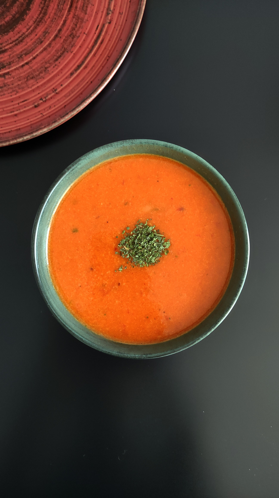

Home
Tomato soup

Description
A very basic bowl of tomato soup with garnish. Nothing fancy here.
Ingredients
- Can of tomato soup
- Salt
- Garnish of choice
Steps
- Open the can of tomato soup and pour into bowl.
- Add some water (preferably not tap water unless said water is clean) to the soup.
- Put lid on top of bowl and microwave for 2 minutes.
- Take bowl out and give it a stir, add some salt for taste.
- Repeat microwave process if not hot enough but for only 1:00-1:30 minutes as to not boil over the soup.
- Once soup is hot enough add garnish of choice and enjoy! :0
I told you this one was nothing fancy...